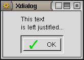
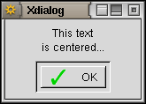
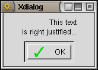
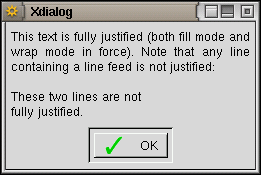
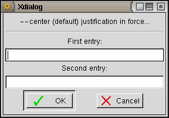
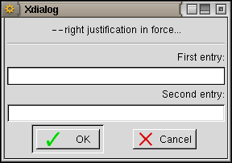
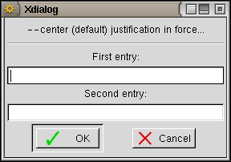
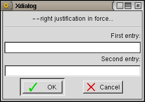

--allow-close is the default and entitles the user to close the Xdialog window through the window manager; when a close event is received by Xdialog, it exits immediately and returns 255 as the exit code to the shell. Specifying --no-close will make Xdialog ignore any close (sometimes called delete) event originating from the window manager. Note that it is always possible, although not recommended, to destroy a Xdialog window using the window manager destroy event.
These options control the Xdialog widgets placement (ditto). The default is --screen-center. The --auto-placement option lets the window manager decide where to pop up Xdialog widgets. Note that some window managers may perfectly ignore these options (which are only requests sent by GTK+ to the window manager) and place the widgets where they feel like...
These options instruct Xdialog to justify the text centered, left, right or full into the <text> label. Default is --center. The effect of these options is only sensible for multiple-lines text.
Because of what I consider a bug in GTK+, the center and right justification modes only work when the GTK+ line wrap mode is not in force, while the fill justification only works when the GTK+ line wrap mode is in force (go figure...). This is why, as of v2.0.0, Xdialog uses its own wrapping routine for all cases but when the --fill option is requested: in this case, the GTK+ line wrap mode is automatically enforced.
Note also that the --fill option will left justify any line containing an explicit line feed.
   
These options also affect the labels used in 2inputsbox, 3inputsbox, 2rangesbox and 3rangesbox widgets above each text entry/horizontal slider. The alignement of these labels is also affected by --left and --right, even if these labels are held on a single line.
  
 
See also the (c)dialog compatibility notes.
When --wrap is is force, Xdialog automatically wraps the backtitle and text around so to make them fit the widget width (note that as of v2.0.0, Xdialog uses its own wrapping routine as a replacement for the buggy GTK+ built-in one: but this does not apply when the --fill option is in force, where the GTK+ wrapping routine must be used...). The default is --no-wrap but remember that using the --fill options will enforce the (GTK+) wrap mode as well.
See also the (c)dialog compatibility notes.
When passing a string parameter to Xdialog, Xdialog takes embeded newline characters into account by default (--cr-wrap is the default). Specifying --no-cr-wrap will prevent these newline characters to be taken into account for <text>, <backtitle>, <help> and --check option <label> parameters (thus allowing to split these strings into your script without having to escape the end of each line with a backslash). Note that whatever option is in force, any embeded "\n" characters sequence is always translated into a newline.
See also the (c)dialog compatibility notes.
The default behaviour of Xdialog is to mimic (c)dialog and send all its results to stderr. This may sometimes be inapropriate and you may want to get separate outputs on separate streams (one for the true errors/warnings and one for the results). This is why the --stdout common option was implemented: it makes Xdialog to output all the widgets results to stdout instead of stderr. The --stderr common option is there so that you can revert to the default stderr output in a chained dialogs command line.
The --separator option allows to change the separator used by the Xdialog widgets that return more than one result (2inputsbox, 3inputsbox, 2rangesbox, 3rangesbox, 2spinsbox, 3spinsbox, checklist, buildlist). The default separator is "/" but it may be unpractical to use such a separator. You can therefore change the separator to any character (examples: "\n" (line feed) or "|").
The --separate-output is a (c)dialog compatible option and is synonym to --separator "\n".
Note: former Xdialog releases used the "\n" (line feed) as a results separator for the checklist widget; this has been changed to "/" in Xdialog v1.5.0 so to make it compatible with (c)dialog. In your old scripts using the Xdialog checklist, you will then have to add the --separate-output option before the --checklist one.
The --buttons-style option must be followed by a parameter (the style name, case sensitive !) which must be either "default" (both icon and text in each button), "icon" (icon only in each button) or "text" (text only in each button).